GCP Data Pipeline: MySQL to BigQuery to Looker Studio¶
This guide walks you through creating a data pipeline that extracts data from a MySQL database, transforms and loads it into BigQuery using a Cloud Run function, schedules this process with Cloud Scheduler, and finally visualizes the data in Looker Studio.
Part 1: Creating the BigQuery Dataset and Table¶
A Dataset in BigQuery is like a database or a schema; it's a container for your tables. A Table contains your actual data, organized into rows and columns with a defined schema.
Step 1: Create a BigQuery Dataset¶
-
Navigate to BigQuery:
- In the Google Cloud Console, open the navigation menu (☰).
- Scroll down to the BigQuery section and click on Studio.
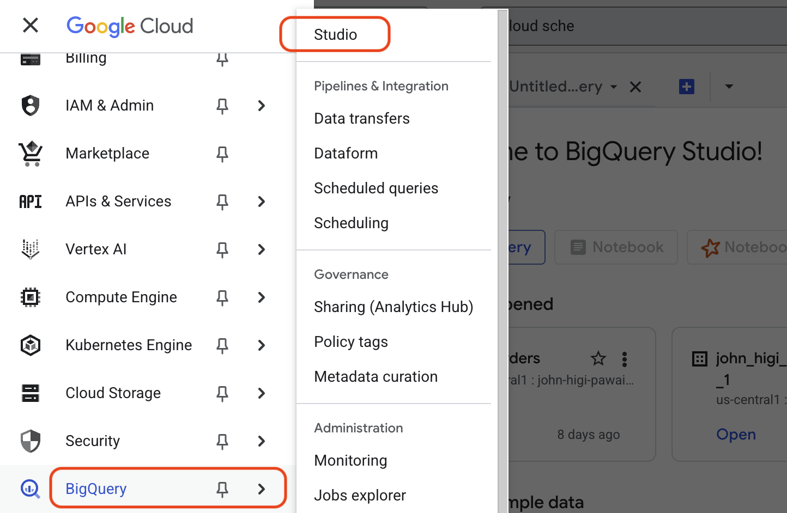
-
Select Your Project:
- In the Explorer panel on the left, find and click on your Google Cloud project name.
-
Initiate Dataset Creation:
- Click the three-dot menu (⋮) next to your project ID.
- Select Create dataset.
-
Configure the Dataset:
- Dataset ID: Enter a unique name for your dataset. This name will be part of your table IDs (e.g.,
cloud_mastery). - Data location: Select the geographic location where your data will be stored (e.g.,
us-central1for a region orUSfor a multi-region). !!! important You cannot change the location after creation. Choose a location close to your other services (like your Cloud Function) to optimize performance and cost. - Leave other settings as default for now. Click the CREATE DATASET button. Your new dataset will now appear under your project in the Explorer panel.
- Dataset ID: Enter a unique name for your dataset. This name will be part of your table IDs (e.g.,
Step 2: Creating a BigQuery Table¶
Now that you have a dataset, you can create a table inside it using the Console Interface (Visual Builder) to create an empty table where you will load data later.
-
Select Your Dataset:
- In the Explorer panel, find the dataset you just created (e.g.,
cloud_mastery). - Click the three-dot menu (⋮) next to your dataset name.
- Select Create table.
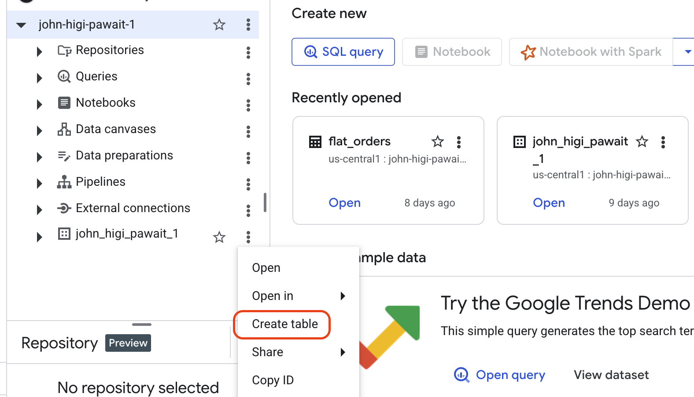
- In the Explorer panel, find the dataset you just created (e.g.,
-
Configure the Table: This will open the "Create table" configuration page.
- Source: For "Create table from", keep the default Empty table.
-
Destination:
- Project and Dataset will be pre-filled.
- Table name: Enter a name for your table (e.g.,
denormalized_orders).
-
Click CREATE TABLE.
Your new empty table will now appear under its dataset. To view your table name, click on your table name in your dataset on the left panel, then click on Details at the top. Finally, copy your Table ID to be used in the next session.
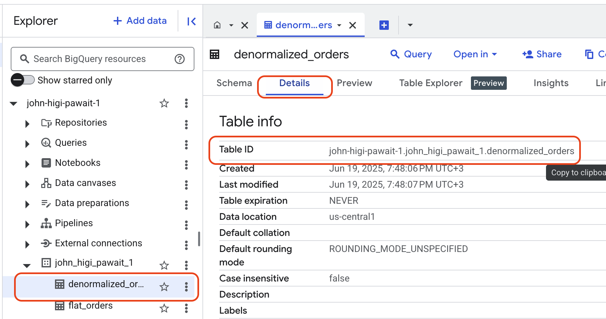
Part 2: Creating the Cloud Function¶
Prerequisites¶
Before you begin, ensure you have the following ready:
- Google Cloud Project: A project with billing enabled.
- Enabled APIs: Make sure the following APIs are enabled in your project. You can enable them by searching for them in the console's search bar and clicking "Enable".
- Cloud Functions API
- Cloud Build API
- Artifact Registry API
- BigQuery API
- Source MySQL Database: This guide will focus on connecting to a Cloud SQL instance. The credentials will be provided to you.
DB_USER:studentDB_PASS: your project name (e.g.john-doe-pawait-1)DB_NAME:cloud_masteryDB_HOST: your cloudsql instance public ip (e.g.34.136.216.83)
- BigQuery Table: You need an existing BigQuery Dataset and table where the pipeline will load the data from our first step.
BQ_TABLE_ID:your-project-id.your_dataset_name.your_table_name(e.g.,john-higi-pawait-1.john_higi_pawait_1.cloud_mastery)
Step 1: Prepare Your Code Files¶
Your Cloud Function needs two files: main.py (our function's logic) and requirements.txt (its dependencies).
-
main.py- Copy the code snippet and paste it in the
main.pyfile.
main.py import os import pandas as pd import pymysql from google.cloud import bigquery def denormalize_and_load(request): db_user = os.environ['DB_USER'] db_pass = os.environ['DB_PASS'] db_name = os.environ['DB_NAME'] db_host = os.environ['DB_HOST'] table_id = os.environ['BQ_TABLE_ID'] query = """ SELECT o.id AS order_id, o.orderNumber, CONCAT(c.firstName, ' ', c.lastName) AS customer_name, c.email, o.orderDate, od.product_id, p.name AS product_name, p.category, od.quantity, od.unitCost, od.totalCost, o.status, o.paymentMethod FROM orders o JOIN customers c ON o.customer_id = c.id JOIN order_details od ON o.id = od.order_id JOIN products p ON od.product_id = p.id """ connection = pymysql.connect( host=db_host, user=db_user, password=db_pass, database=db_name, port=3306, cursorclass=pymysql.cursors.DictCursor ) try: with connection.cursor() as cursor: cursor.execute(query) results = cursor.fetchall() finally: connection.close() df = pd.DataFrame(results) # Explicitly cast date/time columns if necessary, BigQuery auto-detects often if 'orderDate' in df.columns: df['orderDate'] = pd.to_datetime(df['orderDate']) client = bigquery.Client() job_config = bigquery.LoadJobConfig( write_disposition=bigquery.WriteDisposition.WRITE_TRUNCATE, autodetect=True # Set to False if you want to provide a schema ) job = client.load_table_from_dataframe(df, table_id, job_config=job_config) job.result() # Wait for the job to complete return f"Loaded {len(df)} rows to {table_id}." - Copy the code snippet and paste it in the
-
requirements.txt- This file lists the Python libraries your function needs. Copy the code snippet and paste it in the
requirements.txt.
functions-framework==3.* pandas==2.2.2 PyMySQL==1.1.0 google-cloud-bigquery==3.21.0 # SQLAlchemy and pyarrow might not be strictly needed for this specific script # but were in the original requirements. Add if other parts of your code use them. # SQLAlchemy==2.0.30 # pyarrow==20.0.0Note
The code will also be available to you in the cloud mastery github repo (link should be provided here).
- This file lists the Python libraries your function needs. Copy the code snippet and paste it in the
Step 2: Navigate to Cloud Run functions (for Functions)¶
-
In the Google Cloud Console, search for "cloud run functions".
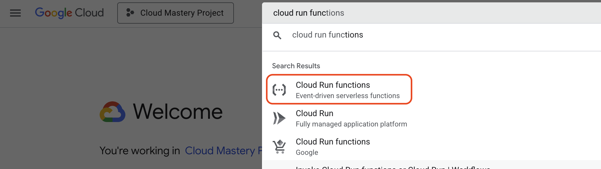
Step 3: Create the Cloud Run Function¶
-
Click on [...] Write a function at the top of the page.
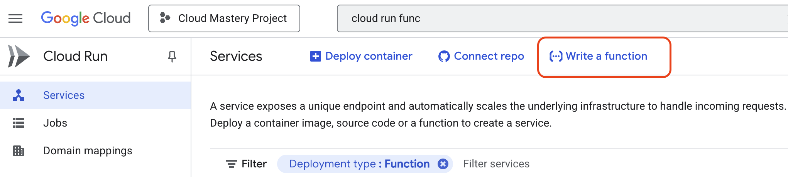
-
You will be taken to the function configuration page.
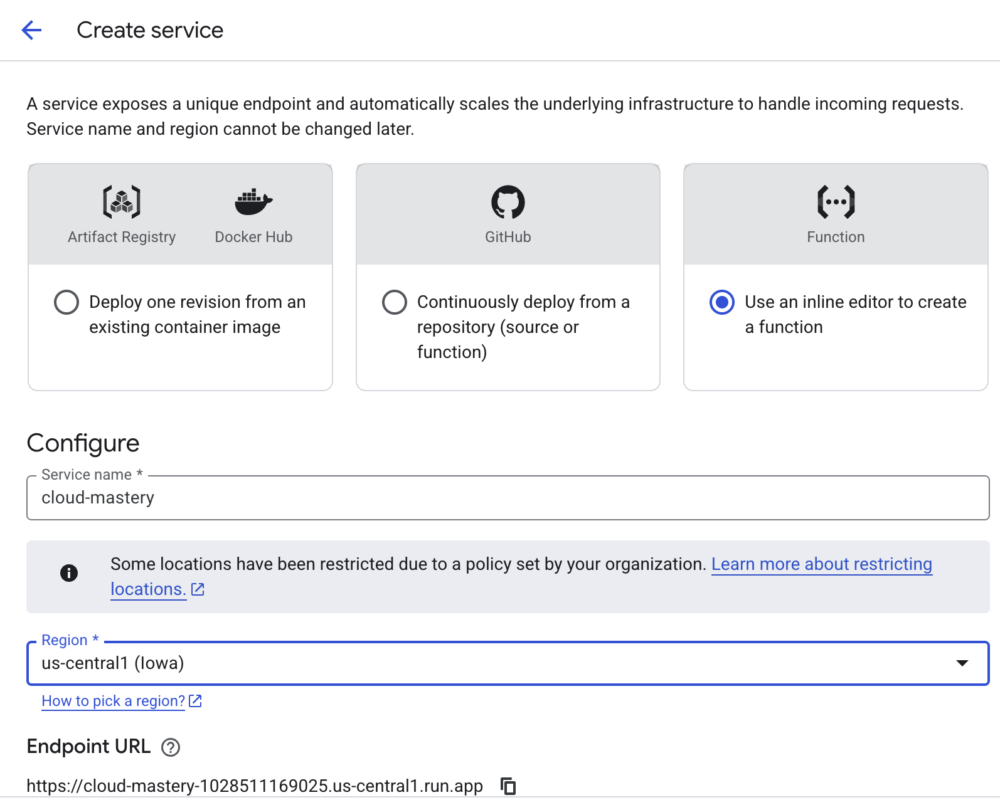
Step 4: Configure the Function Basics¶
Fill out the first section with the following details and leave default for those not included in the list below:
- Leave the default Use an inline editor to create a function option selected.
- Service name: Give your function a descriptive name (e.g.,
cloud-mastery). Service name may only start with a letter and contain up to 49 lowercase letters, numbers, or hyphens. - Region:
us-central1(Iowa) (or your preferred region, matching BigQuery dataset is good). - Select Source code inline if not already selected.
- Runtime: Python 3.13 (or your preferred compatible Python version, e.g., 3.9, 3.10, 3.11, 3.12).
-
Authentication: For easy testing, select Allow unauthenticated invocations.
Security Warning
For a production environment, you should always use "Require authentication" and set up a secure way to call the function (e.g., using Cloud Scheduler with an OIDC token).
-
Expand the Containers, Volumes, Networking, Security section.
- Select the Containers tab if not already selected.
- Under Build configuration, ensure Source code is set to Source code inline.
-
Scroll down to Runtime Environment Variables under "Container(s) > Edit Container". Click on Variables & Secrets.
Runtime Environment Variables: * Click ADD VARIABLE. You will add a variable for each piece of configuration your code needs. *
DB_USER: Your MySQL database username (e.g.,student) *DB_PASS: Your MySQL database password (e.g.,john-doe-pawait-1). Note: For production, it is highly recommended to use Secret Manager. *DB_NAME: The name of your MySQL database (e.g.,cloud_mastery) *DB_HOST: The public IP address of your Cloud SQL instance. *BQ_TABLE_ID: The full ID for your BigQuery table in the formatyour-project-id.your_dataset_name.your_table_name.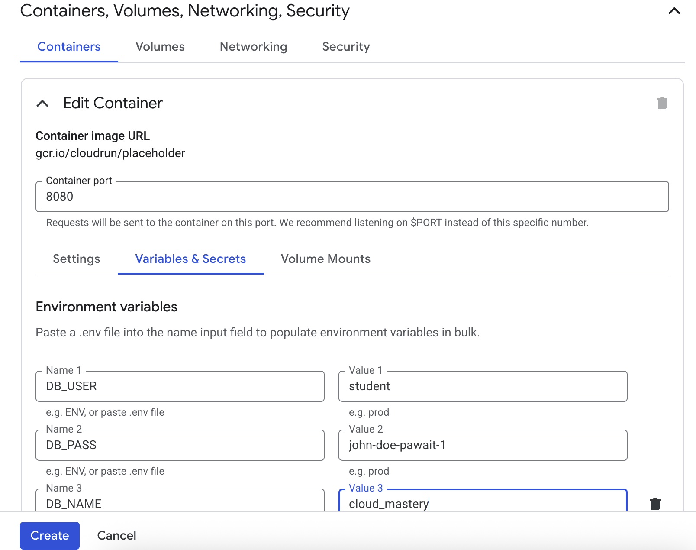
-
Click on the Security tab (within "Containers, Volumes, Networking, Security").
-
Service account: Select the provided Service account (e.g.,
Infra - SA - john-higi-1).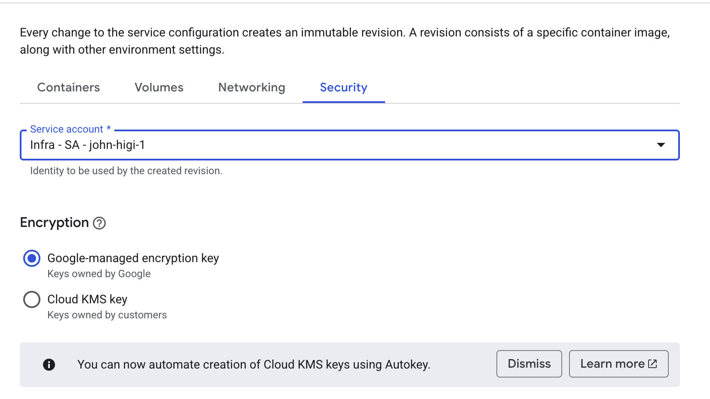
-
Leave the rest as default and click Create
Step 5: Configure Code and Runtime (Inline Editor)¶
This is where you'll provide your code and define the environment.
-
Provide the Code:
- In the
main.pytab, paste the full Python code from Step 1. - Click on the
requirements.txttab and paste the dependencies.
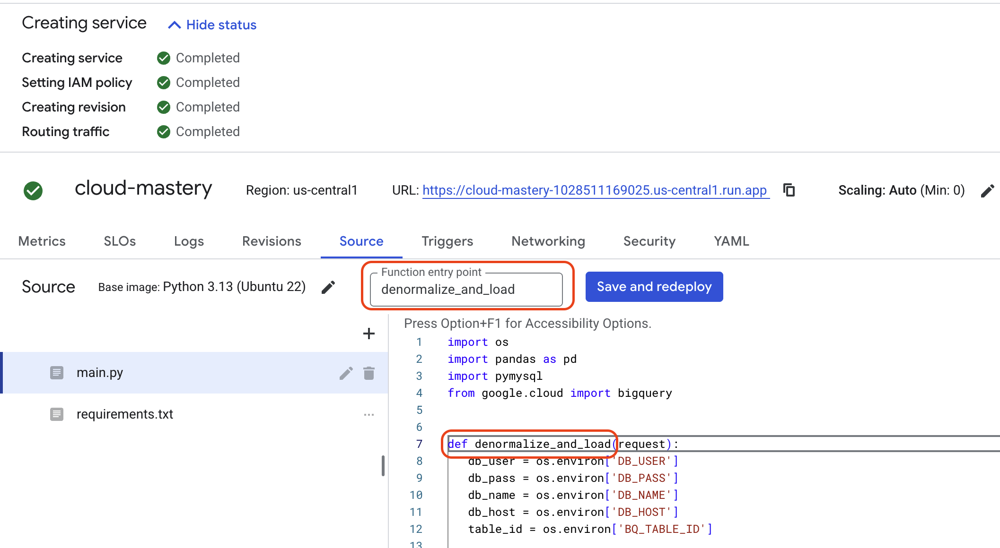
- In the
-
Function entry point: This must match the name of the function in your Python code. Enter
denormalize_and_load. -
Click Save and redeploy (or similar button like "Deploy").
-
Deployment will take a few minutes. You can monitor the progress. Once completed and deployed successfully, you should get all Green checks and a URL provided for your function. Clicking on this URL will trigger the function.
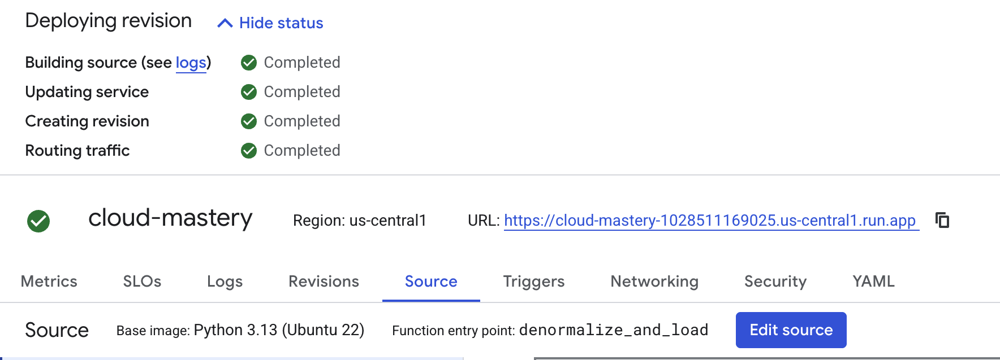
You can test the function by navigating to its URL in a browser or using a tool like
curl.
Part 3: Creating the Cloud Scheduler¶
Prerequisites¶
- Deployed Cloud Function: Your function must be deployed and working correctly when tested manually.
- Cloud Scheduler API Enabled: Ensure the Cloud Scheduler API is enabled in your project.
Step 1: Navigate to Cloud Scheduler¶
-
In the Google Cloud Console, search for "cloud scheduler" OR open the navigation menu (≡), scroll down to the Tools section (or it might be under "Serverless" or "Integration Services") and click on Cloud Scheduler.
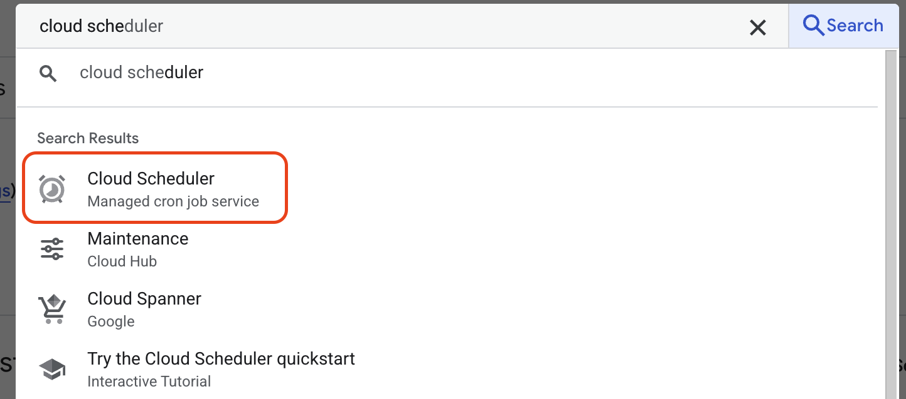
Step 2: Create the Scheduler Job¶
Click the + CREATE JOB button to fill in the configuration details.
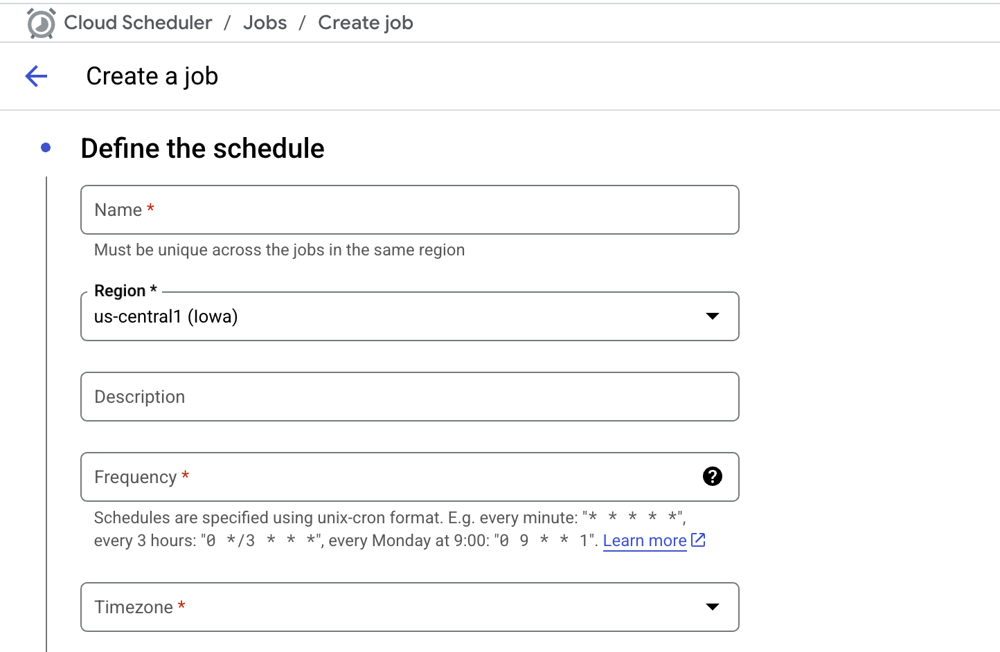
-
Define the job:
- Name: Give the job a descriptive name, like
mysql-to-bq-etl-5min. - Region: Select the same region as your Cloud Function. This minimizes latency and cost.
- Description: (Optional but recommended) Add a short note about what the job does, e.g., "Runs the MySQL to BigQuery ETL function every 5 minutes."
- Name: Give the job a descriptive name, like
-
Define the frequency:
- Frequency: Enter the schedule using cron syntax. For "every 5 minutes," use:
*/5 * * * * - Timezone: Select your desired timezone (e.g., East Africa Time (EAT) or UTC).
- Frequency: Enter the schedule using cron syntax. For "every 5 minutes," use:
-
Configure the execution: This is the most important part, where you tell the scheduler what to run.
- Target type: Select HTTP.
- URL: Paste the Cloud Function Trigger URL you copied after deploying the cloud function (e.g.
https://cloud-mastery-1028511169025.us-central1.run.app). - HTTP method: Select POST. (While GET often works for simple triggers, POST is more conventional for requesting an action, especially if your function might expect a body in the future).
- Auth header: If you configured your Cloud Function to "Require authentication", select Add OIDC token.
- Service account: Select the service account that has permission to invoke the Cloud Run function (e.g., a service account with "Cloud Run Invoker" role for that specific function).
- Audience: If not auto-filled, this is usually the same as the function's trigger URL.
- If you selected "Allow unauthenticated invocations" for the function, set Auth header to None.
Finally, click CREATE.
Step 3: Test and Verify the Job¶
You don't have to wait 5 minutes to see if it works. You can force an immediate run.
- You will be returned to the Cloud Scheduler dashboard.
- Find your newly created job in the list.
- On the far right, click the three-dot menu (⋮) and select Force run.
How to check if it worked:
- Check the Scheduler Log: In the job list, look at the Result column. It should change from "Never run" to "Success" within a few seconds. If it says "Failed," click on the job and then the LOGS tab to see the error (a common error is 403 PERMISSION_DENIED, which usually means the service account permissions are missing or the Audience for OIDC token is incorrect).
- Check the Cloud Function Log:
- Navigate back to your Cloud Function's details page in Cloud Run.
- Go to the LOGS tab.
- You should see new log entries showing that the function started and completed successfully, including your print() message (e.g.,
Loaded X rows...).
- Check BigQuery:
- Navigate to the BigQuery console and check your table. The "Last modified" time should reflect the time you forced the run, and the data should be present.
Part 4: Setting up Looker Studio¶
Prerequisites¶
- Looker Studio Account: You need to have access to Looker Studio (lookerstudio.google.com).
- Existing BigQuery Table: Your
denormalized_orderstable (or similar) must exist in BigQuery and contain data. - An Existing Dashboard to Copy: You need a dashboard to use as a template. For our session, we will use the dashboard embedded on the app. (e.g., a shared template link:
Cloud mastery dashboard).
Part 1: Make a Copy of the Dashboard & Link it to BigQuery¶
This process combines copying the report and connecting it to your new data source in one flow.
- Open the Dashboard: Navigate to the Looker Studio report you want to copy.
-
Make a Copy:
- In the top-right corner, click the three-dot menu (⋮).
- Select Make a copy.
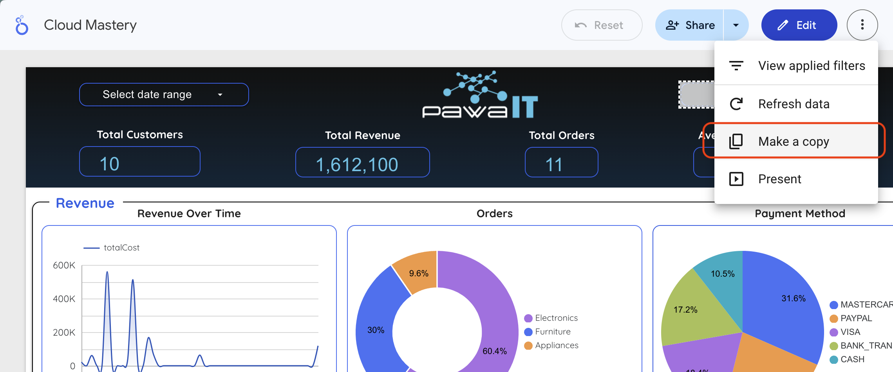
-
Configure the New Data Source:
- A new window titled "Copy this report" will appear. This is the most important step. It shows the report's original data sources and prompts you to choose a new one.
- Under the New Data Source column, click on the current data source to change it.
- A panel will open to select a data source. At the bottom, click CREATE DATA SOURCE.
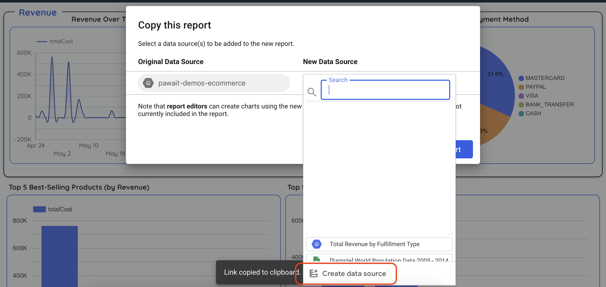
-
Connect to BigQuery:
- In the list of Google Connectors, select BigQuery.
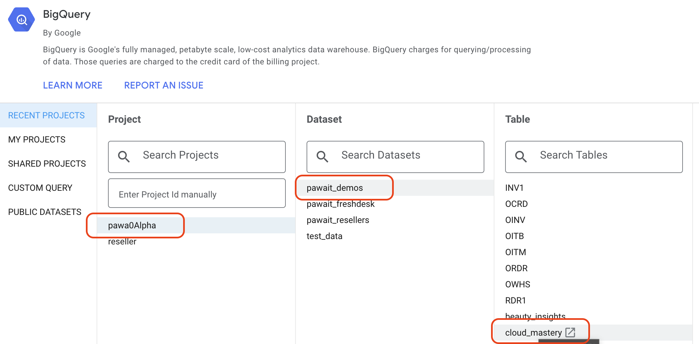
- Your projects will be listed. Select the project containing your data (e.g.,
pawa0Alphaor your project). - Next, select the Dataset you created (e.g.,
pawait_demosor yourcloud_masterydataset). - Finally, select the Table (e.g.,
cloud_masteryif that's your table name, ordenormalized_orders). - Click the blue CONNECT button in the top-right corner.
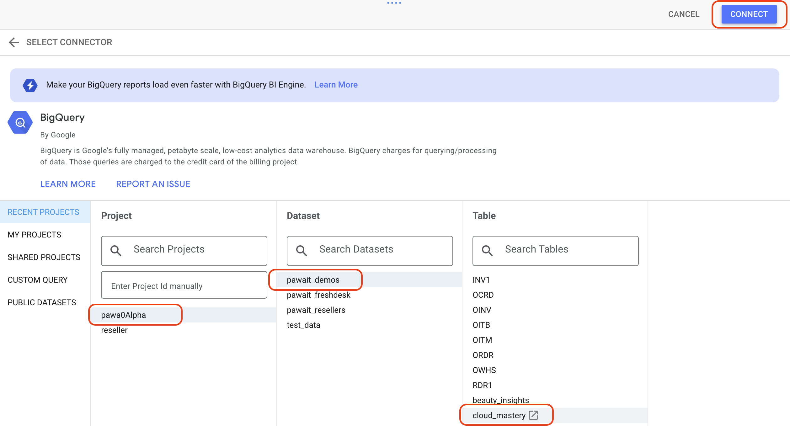
-
Confirm the Schema:
- Looker Studio will now show you all the fields (columns) from your BigQuery table and its best guess for their data types (e.g., Number, Text, Date & Time). It's usually very accurate.
- Click ADD TO REPORT in the top-right corner. (Image for this step is missing, but it's a standard Looker Studio UI element after connecting a data source).
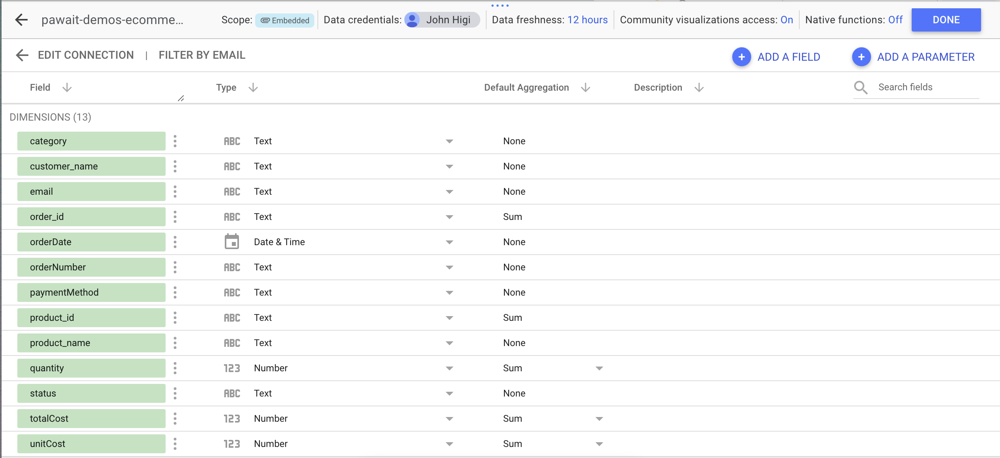
-
Finalize the Copy:
- You will be back at the "Copy this report" window. Your new BigQuery table should now be listed as the New Data Source.
- Click COPY REPORT.
What just happened? Looker Studio has created a new copy of the dashboard. All the charts will now try to get their data from your
denormalized_orderstable.Note
If the field names in your new table don't match the field names used by the original charts, some charts may appear "broken." You'll need to click on each broken chart and manually select the correct fields from your new data source in the Setup panel on the right.
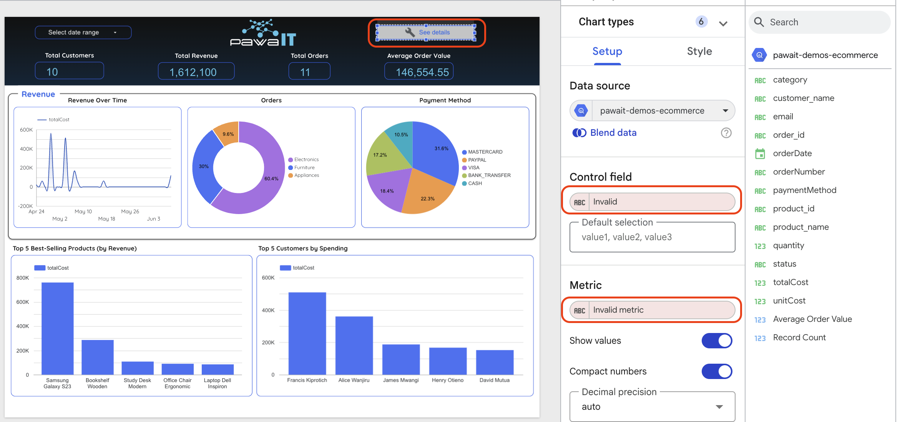
Part 2: Add a Calculated Field¶
Let's create a useful new field without changing our BigQuery table. We'll create a new field called Order Status Group that simplifies the status into "Completed," "In Progress," or "Other."
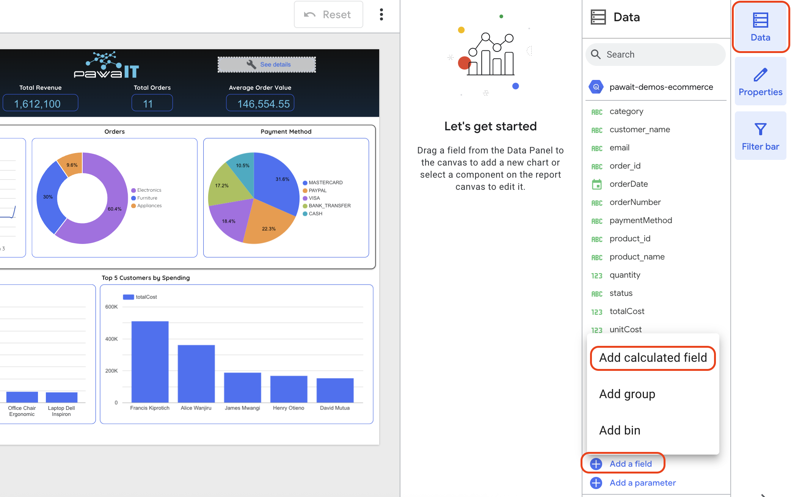
-
Access the Data Source:
- In the menu at the top of your new report, go to Resource > Manage added data sources.
- Find your
denormalized_ordersdata source in the list and click EDIT.
-
Create the New Field:
- In the data source editor view, click the blue + ADD A FIELD button in the top-left.
-
Configure the Calculated Field:
-
A new screen will open. Fill in the details:
- Field Name: Type
Order Status Group. - Formula: Enter a CASE statement to define the logic. This formula is case-sensitive and must match the values in your status column.
-- This formula groups detailed statuses into broader categories. CASE WHEN status = 'Delivered' THEN 'Completed' WHEN status = 'Shipped' THEN 'Completed' WHEN status = 'Processing' THEN 'In Progress' WHEN status = 'Pending' THEN 'In Progress' ELSE 'Other' END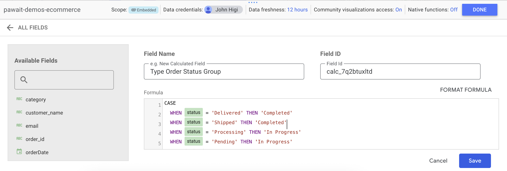
* Looker Studio will show a green checkmark once the formula syntax is valid. * Click SAVE in the bottom-right corner. - Field Name: Type
-
-
Return to the Report:
- Click DONE in the top-right corner of the data source editor to go back to your report canvas.
- Your new field,
Order Status Group, is now available to use in any chart.
Part 3: Add a New Chart Using the Calculated Field¶
Let's visualize the breakdown of our new status groups with a pie chart.
-
Add a Chart to the Canvas:
- In the top menu, click Add a chart.
- Select Pie chart from the dropdown.
- Your cursor will turn into a crosshair. Click anywhere on your report canvas to drop the new chart.
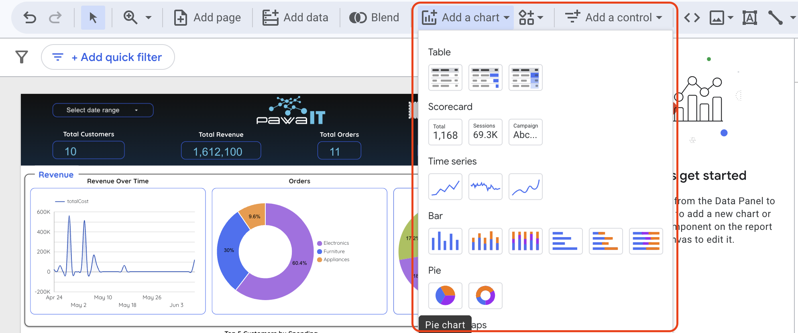
-
Configure the Chart's Data:
- Click on your new pie chart to select it. The Chart > Setup panel will appear on the right.
- Data source: Make sure your
denormalized_orderssource is selected. - Dimension: This is what slices up the pie.
- Drag your new Order Status Group field from the "Available Fields" list on the right and drop it into the "Dimension" box.
- Metric: This is what determines the size of each slice.
- Drag the order_id field (or any unique row identifier like
Record Count) into the "Metric" box. By default, if usingorder_id, it might sum or count. Ensure it's set to Count Distinct (CTD) for unique orders, or Record Count if you want to count all rows per status group.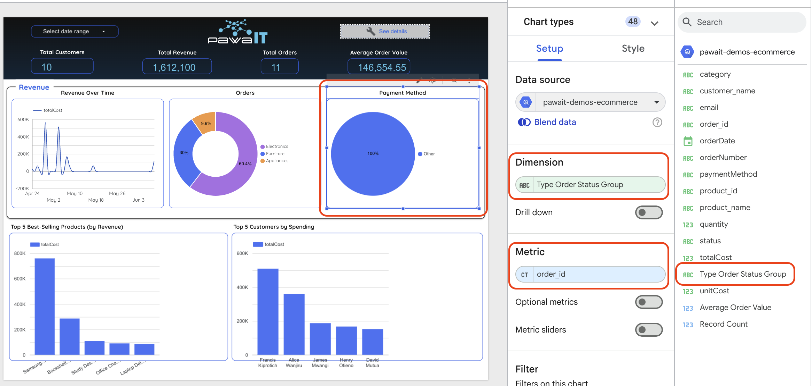
- Drag the order_id field (or any unique row identifier like
-
Style the Chart (Optional):
- With the chart still selected, click the Style tab in the right-hand panel.
- Here you can change colors, add a title, change the font, and choose whether to show percentages or values on the slices.
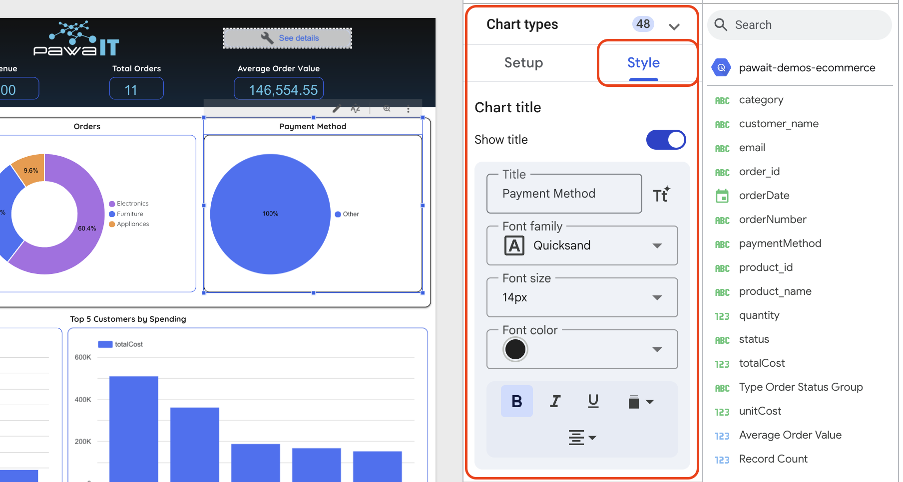
Success
You have now successfully copied a dashboard, connected it to your own BigQuery data, enriched it with a custom calculated field, and built a new visualization to gain deeper insights from your data.